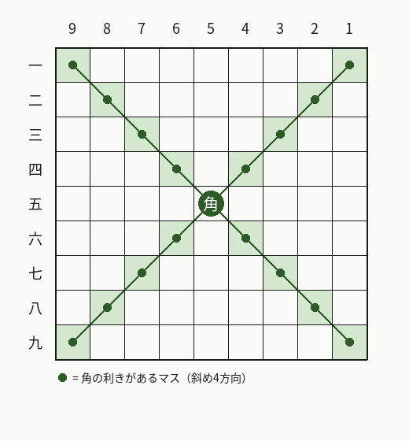
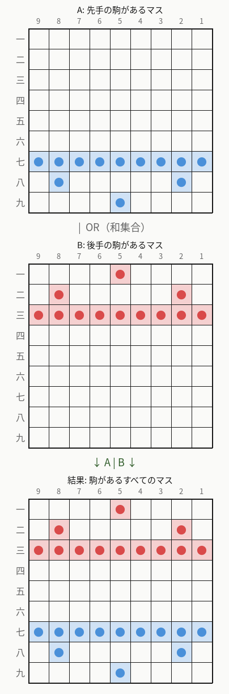
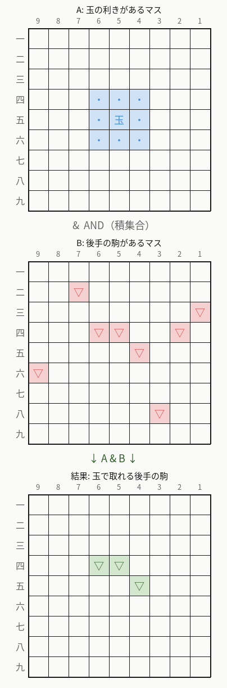
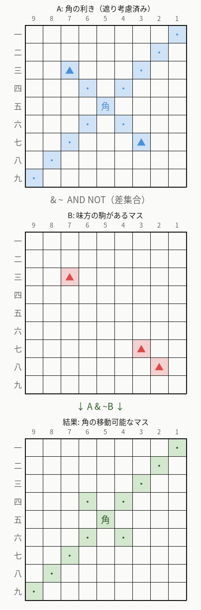
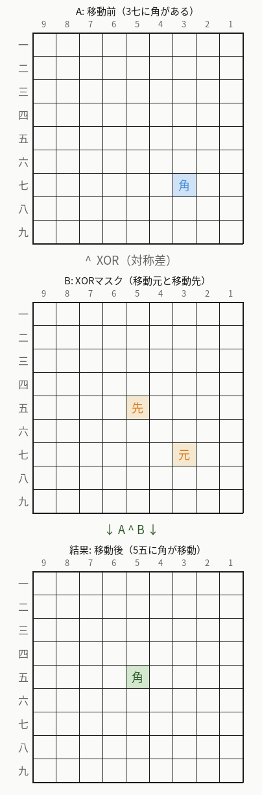
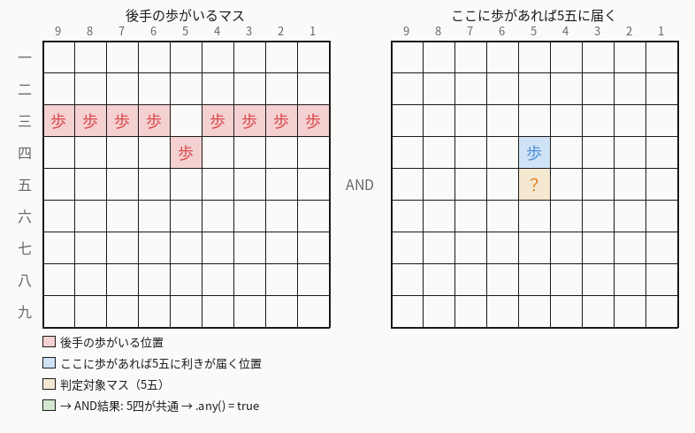
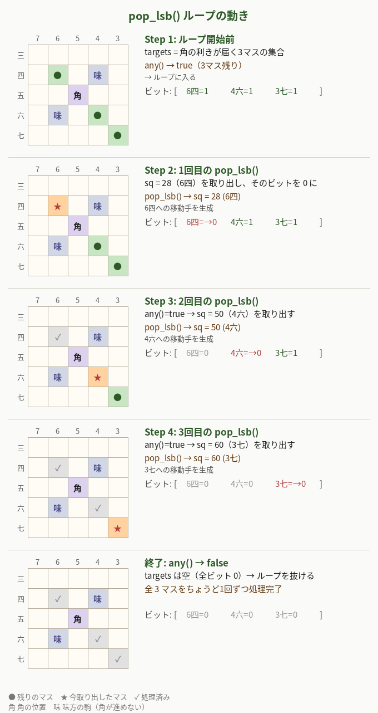
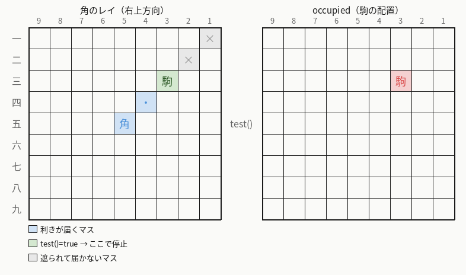
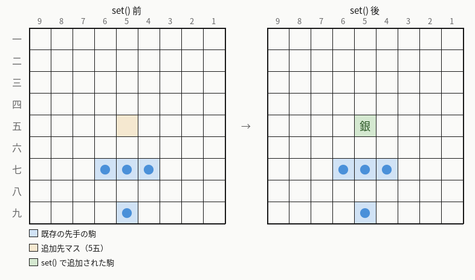
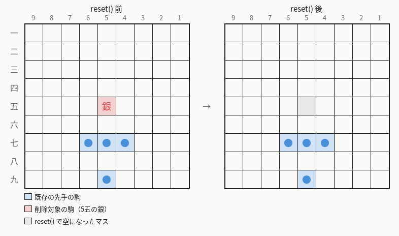

第I部 基礎とデータ構造
第3章 ビットボード
前章では、盤面を int board[81] で表現する方法を学びました。
しかし、この配列だけでは「先手の駒があるマスの集合」や「角の利きが届くマスの集合」を求めるのに、
81マスを1つずつ走査する必要があります。
本章では、こうした集合演算を高速に行うためのビットボード（Bitboard）を解説します。
将棋における利きとは、ある駒が次の一手で移動できるマス（＝その駒が支配しているマス）のことです。 例えば、角は斜め4方向にどこまでも進めるので、途中に他の駒がなければ斜めのライン上のすべてのマスに「利きがある」と言います。 利きは攻撃と防御の両方に関わる概念で、「相手の駒に利きが届いている」なら捕獲できますし、「味方の駒に利きが届いている」なら守っていることになります。

3.1 なぜビットボードを使うのか
ビットボードとは、盤面の各マスを1ビットに対応させた整数値で、 マスの集合を表現するデータ構造です。 例えば「先手の歩があるマスの集合」「角の利きが届くマスの集合」などを それぞれ1つのビットボードで表します。
ビットボードの最大の利点は、集合演算がビット演算1回で完了することです。
| 集合演算 | ビット演算 | 例 |
|---|---|---|
| 和集合（OR） | A | B | 先手の駒 OR 後手の駒 = 全駒のあるマス |
| 積集合（AND） | A & B | 角の利き AND 後手の駒 = 角で取れる駒 |
| 差集合 | A & ~B | 角の利き AND NOT 味方の駒 = 角の移動可能マス |
| 対称差（XOR） | A ^ B | 駒の追加・削除 |
| 補集合（NOT） | ~A | 駒がないマスの集合 |
| 要素数 | popcount | 駒の数を数える |
| 要素の取り出し | ctz + reset | 集合から1マスずつ処理 |
配列で81マスを走査するとO(81)かかる処理が、 ビットボードではO(1)（定数個のビット演算）で完了します。 合法手生成では利きの計算を大量に行うため、この差は非常に大きくなります。
以下、各演算を盤面図で具体的に見ていきましょう。
和集合（OR）— A | B
2つのビットボードの OR を取ると、どちらかに含まれるマスの集合（和集合）が得られます。 例えば「先手の駒があるマス」と「後手の駒があるマス」の OR を取れば、 「盤上に駒があるすべてのマス」が1回の演算で求まります。

// 先手の駒があるマス OR 後手の駒があるマス = 盤上の全駒
Bitboard occupied = black_pieces | white_pieces;積集合（AND）— A & B
2つのビットボードの AND を取ると、両方に含まれるマスの集合（積集合）が得られます。 例えば「玉の利きがあるマス」と「後手の駒があるマス」の AND を取れば、 「玉で取れる後手の駒」が求まります。 玉は周囲8マスにしか利きがないステップ型の駒なので、 途中の駒に遮られる心配がなく、利きの計算がシンプルです。

// 玉の利き AND 後手の駒 = 玉で取れる駒のあるマス
Bitboard captures = king_attacks & opponent_pieces;飛車や角のようにまっすぐ遠くまで進める駒は、途中に他の駒があるとそこで利きが遮られます。 では角の場合、実際にどうやって「遮られた利き」を計算しているのでしょうか？ Hayanagi では
ray_attacks_from() という関数がこれを担当しています。
// src/position.cpp — スライダー型の利き計算（角・飛車・香車共通）
Bitboard ray_attacks_from(int from,
const Bitboard& occupied,
const std::initializer_list<int>& directions) {
const auto& t = tables();
Bitboard attacks;
for (const int dir : directions) {
for (int index = 0; index < t.ray_lengths[from][dir]; ++index) {
const int to = t.ray_squares[from][dir][index];
attacks.set(to); // このマスに利きを追加
if (occupied.test(to)) {
break; // 駒にぶつかったらこの方向は終了
}
}
}
return attacks;
}
// 角の利き = 斜め4方向のレイ
Bitboard Position::bishop_attacks(int from, const Bitboard& occupied) const {
return ray_attacks_from(from, occupied, {NorthWest, NorthEast, SouthWest, SouthEast});
}仕組みは単純です。
- 各方向（角なら斜め4方向）について、起点マスから1マスずつ遠ざかる順にループ
- 通過するマスを
attacksビットボードにセット（利きを追加） - そのマスに駒がある（
occupied.test(to)が true）ならbreakでその方向のループを終了
こうして得られる attacks ビットボードは、すでに「遮り」が考慮された正確な利きです。
相手の駒にぶつかったマスは利きに含まれます（その駒を取れるため）が、
その先のマスは含まれません。
味方の駒にぶつかった場合もそのマスは利きに含まれますが、
後で & ~own_pieces（差集合）を取ることで味方の駒のマスを除外します。
つまり、角で取れる後手の駒を求める場合は次のようになります。
// 1. まず occupied（盤上の全駒）を考慮した角の利きを計算
Bitboard attacks = bishop_attacks(from, occupied);
// → 途中で駒にぶつかったらそこで止まるので、正確な利きが得られる
// 2. AND で後手の駒と重なるマスを取得
Bitboard captures = attacks & opponent_pieces;
// → これが角で実際に取れる後手の駒このように、Hayanagi では「利きのビットボードを作る段階」で遮りを処理し、 その後のビット演算では単純な AND だけで済むようにしています。 第5章「攻撃テーブルと利き計算」でさらに詳しく解説します。
差集合（AND NOT）— A & ~B
「Aに含まれるが、Bには含まれない」マスを求めるには、A & ~B とします。
例えば「角の利きがあるマス」から「味方の駒があるマス」を除けば、
「角が実際に移動できるマス」が得られます（味方の駒がある場所には移動できないため）。
下の図では、5五の角に対して味方の駒が7三と3七にあります。 角の利き（A）は遮りを考慮済みなので、7三より先の左上方向（8二・9一）や 3七より先の右下方向（2八・1九）には利きが届いていません。 この利きから味方の駒のマスを AND NOT で除外すると、角が実際に移動できるマスだけが残ります。

// occupied を考慮した角の利き AND NOT 味方の駒 = 角の移動可能なマス
Bitboard attacks = bishop_attacks(from, occupied); // 遮り考慮済み
Bitboard targets = attacks & ~own_pieces;対称差（XOR）— A ^ B
XOR は「ビットが異なるとき1、同じとき0」になる演算です。 この性質を利用すると、同じ操作で追加にも削除にもなるという便利な特徴が得られます。
- ビットが 0 の位置に XOR で 1 を与えると → 1 になる（追加）
- ビットが 1 の位置に XOR で 1 を与えると → 0 になる（削除）
これを駒の移動に応用できます。 「移動元」と「移動先」の2ビットだけが立ったマスクと XOR を取れば、 移動元のビットが消え（削除）、移動先にビットが立つ（追加）——つまり駒の移動が1回の演算で完了します。

// 3七(マス60)から5五(マス40)へ角を移動
Bitboard move_mask;
move_mask.set(60); // 移動元
move_mask.set(40); // 移動先
piece_bb ^= move_mask; // 移動元を削除、移動先を追加（1回のXOR）~A はビットボードの全ビットを反転し、「Aに含まれないマスの集合」を返します。
例えば ~occupied で「駒がないマス（空きマス）の集合」が得られます。
NOT は単体で使うことは少なく、上記の AND NOT のように他の演算と組み合わせて使うのが一般的です。
3.2 81マスの表現：lo + hi の設計
チェス（64マス）では1つの uint64_t（64ビット符号なし整数）でビットボードを表現できますが、
将棋は81マスあるため、64ビットには収まりません。
Hayanagiでは 2つの uint64_t を使い、81マスを分割して格納します。
lo（low の略）— マス番号の小さい方（マス番号0〜63）を格納する64ビット整数。64ビットすべてを使用します。hi（high の略）— マス番号の大きい方（マス番号64〜80）を格納する64ビット整数。下位17ビットだけを使用し、残りの上位47ビットは常に0です。
ここで重要なのは、lo/hi の分割は先手・後手とは無関係ということです。
「low/high」はあくまでマス番号の小さい方・大きい方という意味であり、
先手陣や後手陣といった将棋上の概念とは対応していません。
マス番号は盤面の左上（9一、後手の陣地側）から右下（1九、先手の陣地側）へ順番に振られています。
そのため、lo には一段目〜七段目の全マスと八段目の9筋が入り、
hi には八段目の残り8マスと九段目の全マスが入ります。
どちらの変数にも先手・後手両方の駒が含まれうるので、
「lo = 後手側」「hi = 先手側」のような対応はありません。
また、先手から見て盤面の上部が hi（high）、下部が lo（low）と思いがちですが、
実際には逆です。マス番号は上側（一段目）が小さく下側（九段目）が大きいので、
盤面の上側が lo、下側が hi になります。
名前は盤面の位置ではなく、あくまでマス番号の大小に由来しています。
では、なぜこのような分割なのでしょうか？
理由は単純で、コンピュータが一度に扱える整数の最大幅が64ビットだからです。
81マスを1つの変数に入れたいところですが、C++ の最大の整数型 uint64_t は64ビットまでしか持てません。
そこで81マスを順番に並べて、最初の64マス（マス番号0〜63）を lo に、
残りの17マス（マス番号64〜80）を hi に入れているだけです。
64と17という不均等な分割は、64ビット整数の限界から来ています。
「上側が lo で下側が hi」という対応は人間にとっては紛らわしいですが、 実際にエンジンのコードを書くときに
lo/hi のどちらがどの段かを意識する場面はほとんどありません。
set(square) や test(square) がマス番号から自動的に lo/hi を振り分けてくれるので、
プログラマは「マス番号40を操作する」とだけ考えれば済みます。
lo/hi の分割はビットボード内部に隠された実装の都合であり、
外側から使う分にはマス番号だけを意識すれば十分です。
src/bitboard.h（抜粋）
struct Bitboard {
static constexpr std::uint64_t kHiMask = (1ULL << 17) - 1;
std::uint64_t lo = 0;
std::uint64_t hi = 0;
constexpr Bitboard() = default;
constexpr Bitboard(std::uint64_t lo_bits, std::uint64_t hi_bits)
: lo(lo_bits), hi(hi_bits & kHiMask) {}
マス番号0〜63が lo の各ビットに、マス番号64〜80が hi の下位17ビットに対応します。
マス番号は square = row × 9 + col で計算されます（row-major 順）。
以下の表で、各マスのマス番号・格納先・ビット位置を確認できます。
| 段 | row | 9筋 (col 0) |
8筋 (col 1) |
7筋 (col 2) |
6筋 (col 3) |
5筋 (col 4) |
4筋 (col 5) |
3筋 (col 6) |
2筋 (col 7) |
1筋 (col 8) |
格納先 |
|---|---|---|---|---|---|---|---|---|---|---|---|
| 一 | 0 | 0 | 1 | 2 | 3 | 4 | 5 | 6 | 7 | 8 | lo bit 0〜8 |
| 二 | 1 | 9 | 10 | 11 | 12 | 13 | 14 | 15 | 16 | 17 | lo bit 9〜17 |
| 三 | 2 | 18 | 19 | 20 | 21 | 22 | 23 | 24 | 25 | 26 | lo bit 18〜26 |
| 四 | 3 | 27 | 28 | 29 | 30 | 31 | 32 | 33 | 34 | 35 | lo bit 27〜35 |
| 五 | 4 | 36 | 37 | 38 | 39 | 40 | 41 | 42 | 43 | 44 | lo bit 36〜44 |
| 六 | 5 | 45 | 46 | 47 | 48 | 49 | 50 | 51 | 52 | 53 | lo bit 45〜53 |
| 七 | 6 | 54 | 55 | 56 | 57 | 58 | 59 | 60 | 61 | 62 | lo bit 54〜62 |
| 八 | 7 | 63 | 64 | 65 | 66 | 67 | 68 | 69 | 70 | 71 | lo bit 63 /hi bit 0〜7 |
| 九 | 8 | 72 | 73 | 74 | 75 | 76 | 77 | 78 | 79 | 80 | hi bit 8〜16 |
例えば「5五」は row=4, col=4 なので、マス番号は 4×9+4 = 40、lo のビット40 に対応します。
「1九」は row=8, col=8 なので、マス番号は 8×9+8 = 80、hi のビット16（= 80−64）に対応します。
h段の9マス（sq 63〜71）はloとhiにまたがっています。 sq 63 は lo のビット63（最上位ビット）に、sq 64〜71 は hi のビット0〜7に格納されます。 この分割はrow-major順でマスを0から順に並べた結果であり、 特に段の途中で分かれることによる問題はありません。 ビットボード操作は個々のマスに対して行われるため、段の境界を意識する必要はないのです。
3.3 kHiMask によるマスキング
hi は64ビットの変数ですが、実際に使うのは下位17ビットだけです。
上位47ビットにゴミが入ると集合演算の結果がおかしくなるため、
kHiMask でマスキングして上位ビットをクリアします。
static constexpr std::uint64_t kHiMask = (1ULL << 17) - 1;
// kHiMask = 0x1FFFF
//
// 16進数: 0x 0001 FFFF
// 2進数: 0b 0000 0000 ... 0001 1111 1111 1111 1111
// ^^^^^^^^^^^^^^^^^^^^^^^^^^^
// 下位17ビットがすべて1
//
// ※ 0x は16進数、0b は2進数を表すプレフィックス（接頭辞）です。
// C++ のコード中で 0xFF は16進数の255、0b1010 は2進数の10を意味します。
コンストラクタで hi_bits & kHiMask が行われるほか、
ビット操作のたびに hi &= kHiMask や (hi | other.hi) & kHiMask
のようにマスキングされます。これにより、hi の上位47ビットが常に0であることが保証されます。
3.4 基本操作
3.4.1 any() / none() — 空判定
src/bitboard.h（抜粋）
bool any() const {
return lo != 0 || hi != 0;
}
bool none() const {
return !any();
}
explicit operator bool() const {
return any();
}
any() はビットボードに1つ以上のマスがセットされていれば true、
none() は完全に空なら true を返します。
explicit operator bool() により、if (bb) { ... } のような条件式でも使えます。
any() は、あるマスに特定の駒の利きが届いているか（＝攻撃されているか）を判定する場面で頻繁に使われます。

「5五が相手の歩に攻撃されているか？」を判定するには、逆方向から考えます。 「どのマスに歩があれば5五に利きが届くか」を事前に計算しておき（右の図）、 実際にそこに歩がいるか（左の図）を AND で調べます。
// src/position.cpp — あるマスに相手の歩の利きが届いているか？
if ((piece_bb_[opponent][Pawn] & step_to[opponent][Pawn][square]).any()) {
return true; // 歩の利きが届いている → このマスは攻撃されている
}piece_bb_[opponent][Pawn]（相手の歩があるマスの集合）と
step_to[opponent][Pawn][square]（ここに歩があれば対象マスに利きが届くマスの集合）の AND を取り、
結果が空でなければ（.any()）攻撃されていると判定します。
上の図では、後手の歩が5四にあり、5四は「ここに歩があれば5五に利きが届く位置」でもあるため、AND の結果に5四が残り、.any() は true を返します。
ループの終了条件としての any()
ビットボードから1マスずつ取り出して処理するパターンでも
any() は欠かせません。
具体的な例で、1ステップずつ見ていきましょう。
例：角の移動先を1マスずつ処理する
5五にいる角の利きが 6四・4六・3七 の3マスだけに届いている状況を考えます。 なぜ3マスだけかというと、下の図のように周囲に駒がいるためです。
- 6四：ここに相手の駒がいるので、角は6四に移動して取れますが、その先の7三には進めません
- 4六・3七：4六は空きマスなので通過でき、3七に相手の駒がいるのでそこまで届きます（3七の先の2八には進めません）
- 残りの2方向（4四方面・6六方面）には味方の駒がいて、そもそも1マスも進めません
この3マスそれぞれに対して「角を5五からそこに動かす手」を作りたいとき、次のコードを使います。
// targets = 角の利きが届くマスの集合（6四, 4六, 3七 の3ビットが立っている）
while (targets.any()) { // まだマスが残っている？
int sq = targets.pop_lsb(); // 最小番号のマスを1つ取り出し、そのビットを消す
// sq への移動手を生成...
}
pop_lsb() は、ビットボードの中で最もマス番号が小さいマスを1つ返し、
そのビットを 0 にします（集合から1つ取り除く）。
any() は「まだ 1 のビットが残っているか」を返します。
この2つを組み合わせたループの動きを、1ステップずつ図で追ってみましょう。

Step 1（ループ開始前）：
targets には 6四・4六・3七 の3ビットが立っています（●で表示）。
any() は「ビットが残っている」ので true → ループに入ります。
Step 2（1回目）：
pop_lsb() が最小番号のマス＝6四（マス番号28）を返し、そのビットを 0 にします（★で表示）。
ここで「角を5五から6四に動かす手」を生成します。
targets のビットは 3→2 に減りました。
Step 3（2回目）：
any() はまだ true。
pop_lsb() が次に小さいマス＝4六（マス番号50）を返します。
「角を5五から4六に動かす手」を生成。残り1ビット。
Step 4（3回目）：
any() はまだ true。
pop_lsb() が最後のマス＝3七（マス番号60）を返します。
「角を5五から3七に動かす手」を生成。残り0ビット。
終了：
any() が false（ビットが1つも残っていない）を返すので、ループを抜けます。
全3マスをちょうど1回ずつ、漏れなく処理できました。
もし any() で判定せずにループすると、空のビットボードに対して
pop_lsb() を呼んでしまい、未定義動作（プログラムの動作が保証されない状態）になります。
any() が false（＝空）になった時点でループを抜けることで、安全に全マスを処理できます。
3.4.2 test() — 特定マスの確認
src/bitboard.h（抜粋）
bool test(int square) const {
if (square < 64) {
return ((lo >> square) & 1ULL) != 0;
}
return ((hi >> (square - 64)) & 1ULL) != 0;
}
指定したマス番号のビットが立っているかを確認します。
square < 64 なら lo を、それ以外なら hi を参照します。
ビットシフトとANDで該当ビットだけを取り出す、標準的なビット操作です。
test() は、スライダー型の利き計算で「レイの先に駒があるか」を判定するのに使われます。

// src/position.cpp — ray_attacks_from() より
for (int index = 0; index < t.ray_lengths[from][dir]; ++index) {
const int to = t.ray_squares[from][dir][index];
attacks.set(to); // このマスに利きを追加
if (occupied.test(to)) { // ← このマスに駒がある？
break; // あればこの方向のレイは終了
}
}occupied（盤上の全駒のビットボード）に対して test(to) を呼ぶことで、
レイが進む先のマスに駒があるかどうかを1ビットの検査だけで判定しています。
上の図では、4四 → 3三と進んだところで occupied.test(3三) が true になり、
break でこの方向のループが終了します。2二・1一（×印）には利きが届きません。
3.4.3 set() — マスの追加
src/bitboard.h（抜粋）
void set(int square) {
if (square < 64) {
lo |= 1ULL << square;
} else {
hi |= 1ULL << (square - 64);
hi &= kHiMask;
}
}
指定したマスのビットを1にセットします。
hi への操作後に kHiMask でマスキングすることで、
上位ビットが汚染されないようにしています。
なお、square - 64 が0〜16の範囲であれば 1ULL << (square - 64)
は常に下位17ビット内に収まるため、実際にはマスキングがなくても問題ありませんが、
安全のために付けられています。
set() は、盤面に駒を追加するときにビットボードを更新する場面で使われます。

// src/position.cpp — add_piece() より
void Position::add_piece(int square, Color color, PieceType type) {
board_[square] = encode_piece(color, type); // 盤面配列に駒を書き込み
occupied_.set(square); // ← 全駒ビットボードにマスを追加
color_bb_[color].set(square); // ← 色別ビットボードにマスを追加
piece_bb_[color][type].set(square); // ← 駒種別ビットボードにマスを追加
}set() を呼んで同期させます。
3.4.4 reset() — マスの削除
src/bitboard.h（抜粋）
void reset(int square) {
if (square < 64) {
lo &= ~(1ULL << square);
} else {
hi &= ~(1ULL << (square - 64));
}
}
指定したマスのビットを0にリセットします。
~(1ULL << square) は、対象ビットだけが0で他がすべて1のマスクです。
これとANDを取ることで、対象ビットだけをクリアします。
reset() ではマスキングは不要です（0にするだけなので上位ビットは影響しません）。
reset() は、盤面から駒を取り除くときにビットボードを更新する場面で使われます。
set() の逆操作です。

// src/position.cpp — remove_piece() より
void Position::remove_piece(int square) {
const Color color = piece_color(board_[square]);
const PieceType type = piece_type(board_[square]);
occupied_.reset(square); // ← 全駒ビットボードからマスを削除
color_bb_[color].reset(square); // ← 色別ビットボードからマスを削除
piece_bb_[color][type].reset(square); // ← 駒種別ビットボードからマスを削除
board_[square] = 0; // 盤面配列をクリア
}set() と同じ3つのビットボードに対して reset() を呼び、
整合性を保ちます。add_piece() と remove_piece() が対になっていることがわかります。
3.5 pop_lsb() — 最下位ビットの取り出し
ビットボードの最も重要な操作の1つが pop_lsb() です。
集合の中で最も小さいマス番号を取り出し、そのビットをクリアします。
src/bitboard.h（抜粋）
int pop_lsb() {
if (lo != 0) {
const int bit = __builtin_ctzll(lo);
lo &= lo - 1;
return bit;
}
const int bit = __builtin_ctzll(hi);
hi &= hi - 1;
return 64 + bit;
}
3.5.1 __builtin_ctzll の解説
__builtin_ctzll(x) はGCC/Clangの組み込み関数で、
count trailing zeros（末尾の連続する0の個数）を返します。
つまり、最下位のセットされたビットの位置を返します。
例: __builtin_ctzll(0b 0000 1010 0000) = 5
// ^^^^^ 5個の0が続く
// → ビット5が最下位のセットされたビット
この関数は多くのCPUでハードウェア命令（x86では tzcnt または bsf）に
直接変換されるため、非常に高速（1〜3クロック）です。
3.5.2 lo &= lo - 1 のトリック
最下位ビットをクリアするために lo &= lo - 1 という巧妙なビット操作が使われています。
例: lo = 0b 1010 1100
lo - 1 = 0b 1010 1011 (最下位の1とそれ以下を反転)
lo & (lo-1)
= 0b 1010 1000 (最下位の1だけがクリアされた)
x - 1 は最下位のセットされたビットを0にし、
それより下のビットをすべて1にします。
したがって x & (x - 1) は最下位のセットされたビットだけをクリアします。
これは古典的なビット操作のテクニックで、分岐なしで実行できます。
3.5.3 pop_lsb の動作例
「先手の歩がマス20, 29, 38にある」ビットボードからマスを順に取り出す例です。
Bitboard pawns; // sq 20, 29, 38 がセット
int sq1 = pawns.pop_lsb(); // sq1 = 20, マス20のビットがクリア
int sq2 = pawns.pop_lsb(); // sq2 = 29, マス29のビットがクリア
int sq3 = pawns.pop_lsb(); // sq3 = 38, マス38のビットがクリア
// pawns.none() == true3.6 count() — 要素数のカウント
src/bitboard.h（抜粋）
int count() const {
return __builtin_popcountll(lo) + __builtin_popcountll(hi);
}
__builtin_popcountll(x) は、population count（セットされたビットの数）を返す
GCC/Clangの組み込み関数です。
x86では popcnt 命令に変換されます。
例: __builtin_popcountll(0b 1010 1100) = 4
// ^ ^ ^^ 4個のビットが立っている
lo と hi それぞれのpopcountを足すことで、
ビットボード全体のセットされたビット数（= マスの数）を得ます。
例えば、先手の駒のビットボードに対して count() を呼べば、
先手の盤上の駒数が得られます。
3.7 集合演算オペレータ
ビットボード同士の集合演算は、ビット演算オペレータで提供されています。 複合代入演算子（メンバ関数）と、二項演算子（フリー関数）の両方が定義されています。
3.7.1 複合代入演算子
src/bitboard.h（抜粋）
Bitboard& operator|=(const Bitboard& other) {
lo |= other.lo;
hi = (hi | other.hi) & kHiMask;
return *this;
}
Bitboard& operator&=(const Bitboard& other) {
lo &= other.lo;
hi &= other.hi;
return *this;
}
Bitboard& operator^=(const Bitboard& other) {
lo ^= other.lo;
hi = (hi ^ other.hi) & kHiMask;
return *this;
}
|=（和集合）と ^=（対称差）では hi に
kHiMask でマスキングが入ります。
これは、OR や XOR で上位ビットに1が立つ可能性があるためです。
&=（積集合）ではマスキングは不要です
（AND は新たなビットを立てないので、元の hi が正しければ結果も正しくなります）。
3.7.2 二項演算子とその他
src/bitboard.h（抜粋）
inline Bitboard operator|(Bitboard lhs, const Bitboard& rhs) {
lhs |= rhs;
return lhs;
}
inline Bitboard operator&(Bitboard lhs, const Bitboard& rhs) {
lhs &= rhs;
return lhs;
}
inline Bitboard operator^(Bitboard lhs, const Bitboard& rhs) {
lhs ^= rhs;
return lhs;
}
inline Bitboard operator~(const Bitboard& value) {
return Bitboard(~value.lo, ~value.hi);
}
inline bool operator==(const Bitboard& lhs, const Bitboard& rhs) {
return lhs.lo == rhs.lo && lhs.hi == rhs.hi;
}
inline bool operator!=(const Bitboard& lhs, const Bitboard& rhs) {
return !(lhs == rhs);
}
二項演算子はコピーセマンティクスで実装されています。
lhs を値渡しで受け取り、複合代入演算子を適用して返す、典型的なパターンです。
operator~（補集合）は Bitboard のコンストラクタを通すため、
hi には自動的に kHiMask が適用されます。
~value.lo で lo の全64ビットが反転し、
~value.hi で hi が反転された後、コンストラクタで上位47ビットがマスクされます。
合法手生成では、以下のような組み合わせが頻出します。
// 角の利きのうち、味方の駒がないマス = 角の移動可能先
Bitboard targets = bishop_attacks & ~own_pieces;
// 相手の利きがあるマスを除外した玉の移動先
Bitboard king_moves = king_attacks & ~opponent_attacks & ~own_pieces;
// 敵の駒があるマスとの積集合 = 取れる駒
Bitboard captures = attacks & opponent_pieces;
3.8 BitboardIterator — ビットボードの走査
Hayanagiの Bitboard にはイテレータは直接定義されていませんが、
pop_lsb() を使った典型的な走査パターンがエンジン全体で使われています。
// ビットボード bb のすべてのマスを処理する典型パターン
Bitboard bb = /* 何らかの集合 */;
while (bb.any()) {
int sq = bb.pop_lsb();
// sq に対する処理
}
このパターンは以下のように動作します。
bb.any()で集合が空でないことを確認bb.pop_lsb()で最小のマス番号を取得し、そのビットをクリア- 取得したマスに対する処理を行う
- 集合が空になるまで繰り返す
ループ回数はセットされたビットの数（= マスの数）に正確に等しいため、 不要な反復がありません。空マスの多い局面でも効率的に処理できます。
例えば、先手の歩が3つある場合のループ展開は以下のようになります。
// 先手の歩: sq 47, 49, 56 にある場合
Bitboard pawns; // bit 47, 49, 56 がセット
// 1回目: pop_lsb() → 47 (loの最下位セットビット)
// 2回目: pop_lsb() → 49
// 3回目: pop_lsb() → 56
// 4回目: any() → false, ループ終了3.9 ビットボードの視覚的図解
81マスのビット位置と盤面の対応を視覚的に示します。 各マスの数値はビット位置（= マス番号 = square）です。
9筋 8筋 7筋 6筋 5筋 4筋 3筋 2筋 1筋
col0 col1 col2 col3 col4 col5 col6 col7 col8
┌────┬────┬────┬────┬────┬────┬────┬────┬────┐
a段 r0 │ 0 │ 1 │ 2 │ 3 │ 4 │ 5 │ 6 │ 7 │ 8 │ lo
├────┼────┼────┼────┼────┼────┼────┼────┼────┤
b段 r1 │ 9 │ 10 │ 11 │ 12 │ 13 │ 14 │ 15 │ 16 │ 17 │ lo
├────┼────┼────┼────┼────┼────┼────┼────┼────┤
c段 r2 │ 18 │ 19 │ 20 │ 21 │ 22 │ 23 │ 24 │ 25 │ 26 │ lo
├────┼────┼────┼────┼────┼────┼────┼────┼────┤
d段 r3 │ 27 │ 28 │ 29 │ 30 │ 31 │ 32 │ 33 │ 34 │ 35 │ lo
├────┼────┼────┼────┼────┼────┼────┼────┼────┤
e段 r4 │ 36 │ 37 │ 38 │ 39 │ 40 │ 41 │ 42 │ 43 │ 44 │ lo
├────┼────┼────┼────┼────┼────┼────┼────┼────┤
f段 r5 │ 45 │ 46 │ 47 │ 48 │ 49 │ 50 │ 51 │ 52 │ 53 │ lo
├────┼────┼────┼────┼────┼────┼────┼────┼────┤
g段 r6 │ 54 │ 55 │ 56 │ 57 │ 58 │ 59 │ 60 │ 61 │ 62 │ lo
├────┼────┼────┼────┼────┼────┼────┼────┼────┤
h段 r7 │ 63 │ 64 │ 65 │ 66 │ 67 │ 68 │ 69 │ 70 │ 71 │ lo/hi
├────┼────┼────┼────┼────┼────┼────┼────┼────┤ 境界
i段 r8 │ 72 │ 73 │ 74 │ 75 │ 76 │ 77 │ 78 │ 79 │ 80 │ hi
└────┴────┴────┴────┴────┴────┴────┴────┴────┘
lo: ビット 0〜63 → マス 0〜63 (a段〜h段9筋)
hi: ビット 0〜16 → マス 64〜80 (h段8筋〜i段1筋)
初期局面での先手の歩のビットボードを例にとると、以下のようになります。 先手の歩はg段（7段目、row 6）の全9マス（sq 54〜62）にあります。
先手の歩（初期局面）:
9筋 8筋 7筋 6筋 5筋 4筋 3筋 2筋 1筋
┌────┬────┬────┬────┬────┬────┬────┬────┬────┐
a段 │ . │ . │ . │ . │ . │ . │ . │ . │ . │
b段 │ . │ . │ . │ . │ . │ . │ . │ . │ . │
c段 │ . │ . │ . │ . │ . │ . │ . │ . │ . │
d段 │ . │ . │ . │ . │ . │ . │ . │ . │ . │
e段 │ . │ . │ . │ . │ . │ . │ . │ . │ . │
f段 │ . │ . │ . │ . │ . │ . │ . │ . │ . │
g段 │ 1 │ 1 │ 1 │ 1 │ 1 │ 1 │ 1 │ 1 │ 1 │ ← 9つのビット
h段 │ . │ . │ . │ . │ . │ . │ . │ . │ . │
i段 │ . │ . │ . │ . │ . │ . │ . │ . │ . │
└────┴────┴────┴────┴────┴────┴────┴────┴────┘
lo = 0x 007F C000 0000 0000 (ビット54〜62がセット)
hi = 0x 0000 0000 0000 0000 (すべて0)
count() = 9
3.10 設計上の注意点
3.10.1 コンパイラ組み込み関数への依存
__builtin_ctzll と __builtin_popcountll はGCC/Clangの拡張です。
MSVCでは _BitScanForward64 と __popcnt64 に対応します。
Hayanagiのコードでは直接GCC/Clang拡張を使っていますが、
必要に応じてプリプロセッサマクロで切り替えることも可能です。
3.10.2 __builtin_ctzll(0) の未定義動作
__builtin_ctzll(0) は未定義動作です。
pop_lsb() では lo != 0 を先にチェックしてから
__builtin_ctzll(lo) を呼び、
lo == 0 の場合は hi に対して操作するため、
安全に使われています。ただし、lo == 0 かつ hi == 0（空のビットボード）に対して
pop_lsb() を呼ぶと未定義動作になるため、
呼び出し前に any() でチェックする必要があります。
pop_lsb() を呼んではいけません。
必ず bb.any() や while (bb.any()) で空でないことを確認してから呼び出してください。
3.10.3 constexpr 対応
デフォルトコンストラクタと2引数コンストラクタは constexpr 宣言されています。
これにより、コンパイル時に定数のビットボードを生成できます。
事前計算テーブル（利きテーブルなど）の初期化に活用されます。
// コンパイル時に生成可能
constexpr Bitboard kEmptyBoard{}; // すべて0
constexpr Bitboard kAllSquares{0xFFFFFFFFFFFFFFFFULL,
0x1FFFFULL}; // 全81マス
3.11 まとめ
本章ではHayanagiのビットボード実装を学びました。
- ビットボードは盤面のマスの集合を整数のビットで表現し、集合演算をビット演算1回で実行する
- 81マスを
lo（64ビット）+hi（17ビット）の2つのuint64_tで表現する kHiMaskでhiの上位47ビットをマスクし、不正なビットを防ぐtest(),set(),reset()で個別マスの確認・追加・削除を行うpop_lsb()は__builtin_ctzllで最下位ビットの位置を取得し、x &= x - 1でクリアするcount()は__builtin_popcountllでセットされたビット数を数える|=,&=,^=で和集合・積集合・対称差を計算するwhile (bb.any()) { int sq = bb.pop_lsb(); ... }のパターンで全マスを走査する
次章では、このビットボードと第2章の型定義を組み合わせて、
局面全体を管理する Position クラスを見ていきます。